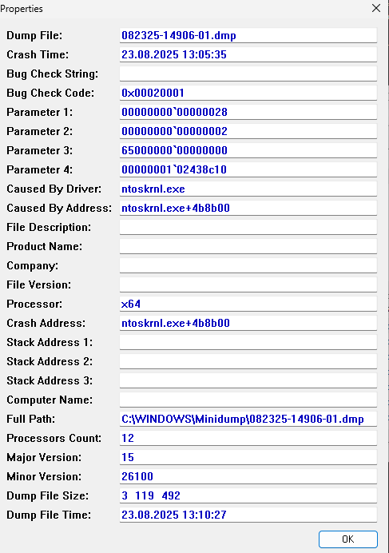

If you have an AMD system then you have probably seen this before, the picture stops then goes black and then this:
Driver Cleanup & Reinstall
-
Clean up drivers
Use DDU (Display Driver Uninstaller) in safe mode to remove any AMD GPU driver remnants.
DDU Download Link
Install AMD official driver
Go to AMD Drivers & Support
Download the driver for the appropriate model (e.g. RX 5500/5600/5700) and install it.
Hypervisor Crash

Windows Hyper-V and VBS Removal (Fix for VMware / VirtualBox / GPU BSOD)
Some newer versions of Windows 10/11 enable Hyper-V, VBS (Virtualization Based Security), Credential Guard and Memory Integrity by default.
This can cause problems with VMware Workstation, VirtualBox or even AMD/NVIDIA drivers (e.g. Hypervisor Error BSOD).
If you want bare metal virtualization or a stable GPU driver, you need to disable these features.
Quick Fix: BAT Script
1. Download or copy the following script into a file named disable-hyperv-vbs.bat.
2. Right-click → Run as Administrator.
3. Wait for the script to finish and the computer to restart.
4. Check under msinfo32 that “Hyper-V - A hypervisor has been detected” is NO.
@echo off
echo ===========================
echo Hyper-V / VBS Killer Script
echo ===========================
:: 1. Disable Hyper-V and Virtual Platforms
dism /Online /Disable-Feature:Microsoft-Hyper-V-All /NoRestart
dism /Online /Disable-Feature:HypervisorPlatform /NoRestart
dism /Online /Disable-Feature:VirtualMachinePlatform /NoRestart
dism /Online /Disable-Feature:WindowsSubsystemForLinux /NoRestart
dism /Online /Disable-Feature:Windows-Defender-ApplicationGuard /NoRestart
:: 2. Disable VBS
reg add "HKLM\System\CurrentControlSet\Control\DeviceGuard" /v EnableVirtualizationBasedSecurity /t REG_DWORD /d 0 /f
reg add "HKLM\System\CurrentControlSet\Control\DeviceGuard" /v RequirePlatformSecurityFeatures /t REG_DWORD /d 0 /f
:: 3. Disable Credential Guard
reg add "HKLM\System\CurrentControlSet\Control\Lsa" /v LsaCfgFlags /t REG_DWORD /d 0 /f
:: 4. Disable Memory Integrity
reg add "HKLM\SYSTEM\CurrentControlSet\Control\DeviceGuard\Scenarios\HypervisorEnforcedCodeIntegrity" /v Enabled /t REG_DWORD /d 0 /f
:: 5. Disable hypervisor startup
bcdedit /set hypervisorlaunchtype off